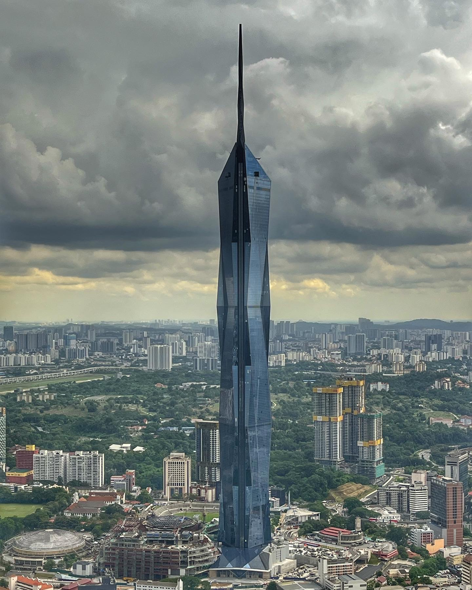

| Strona główna Burj Khalifa Merdeka 118 Shanghai Tower Lotte World Tower Kontakt | |
Merdeka 118Merdeka 118 znajduje się w Kuala Lampur, stolicy Malezji. Ma 679 metrów wysokości, co czyni go drugim najwyższym budynkiem na Ziemi. Budowa trwała 9 lat. 80 ze 118 pięter zajmują biura. Poza tym w budynku znajdują się hotele, prywatne apartamenty, placówki administracyjne, a także parking, restauracja, vip club oraz centrum handlowe i rozrywkowe. |